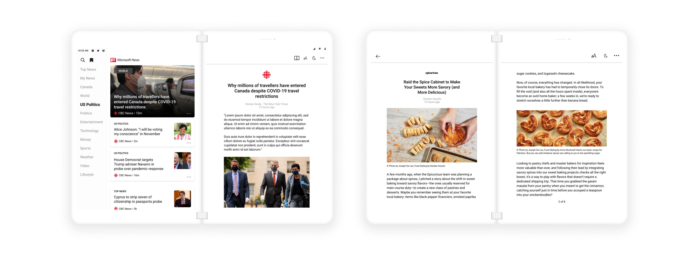
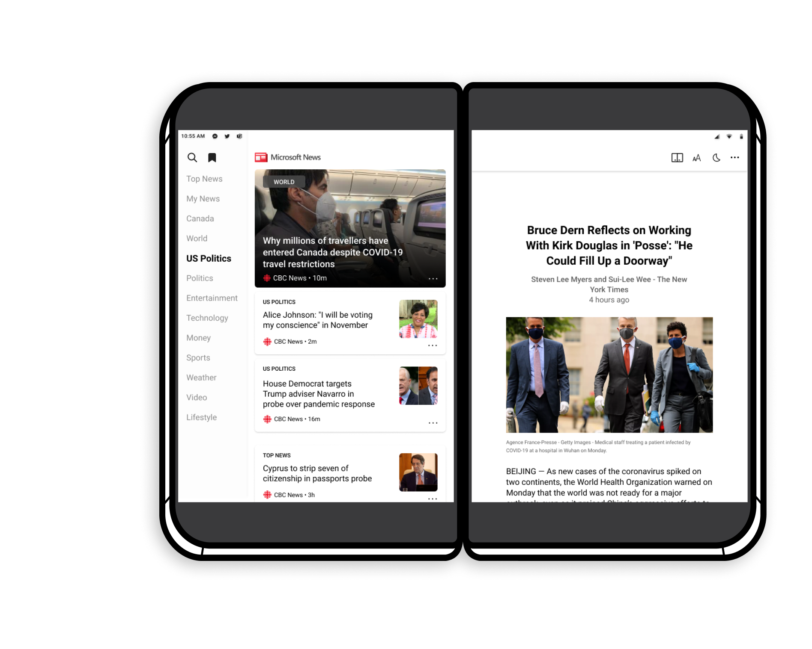

SOLUTION
Looking at the existing Android app for Microsoft News, we transferred the core functionality of the app (e.g. browsing articles, reading article, saving stories) to fit the Surface Duo.
To take it one step further, our team implemented Surface Duo-specific features available for Microsoft News to get more users on the device and make use of the second screen.
CONSTRAINTS
Dual screen technology and design is a limited field of resources, and we weren’t sure what to expect when it came to user behaviour.
Microsoft News is a long-existing brand within Microsoft and we had to adhere to a specific brand and design system in place to keep it consistent with the existing product on web and single screen mobile.
Impact
Shipped and available exclusively on Microsoft's Surface Duo device. Check out this article for our final product.


Newsfeed
The newsfeed is a high visibility feature of Microsoft News, offering a simple, stress free browsing experience. Readers use it as a starting point in our app to navigate further between features and explore the flow.